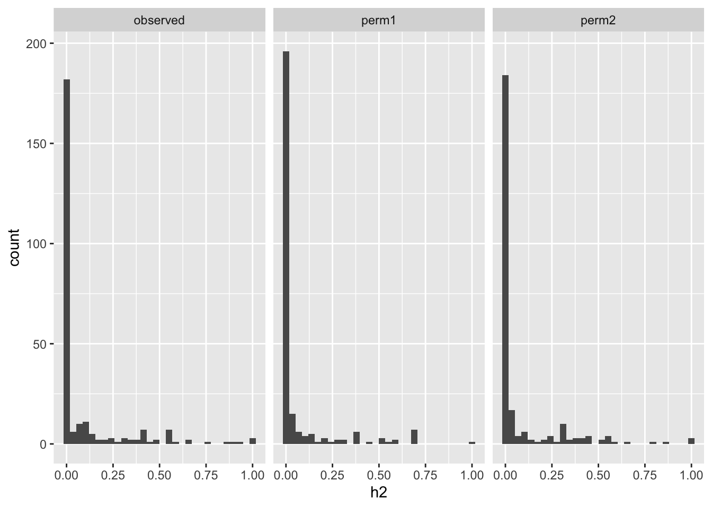
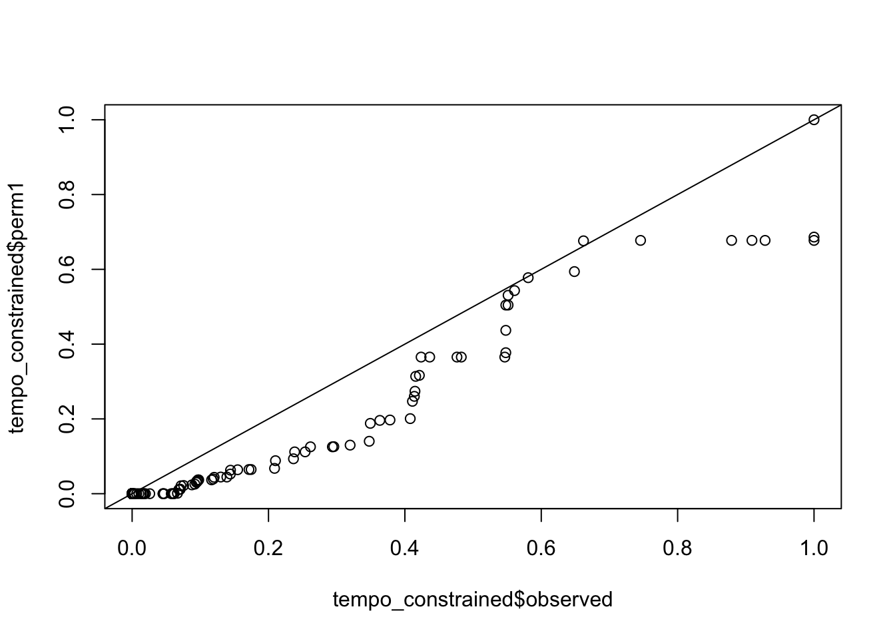
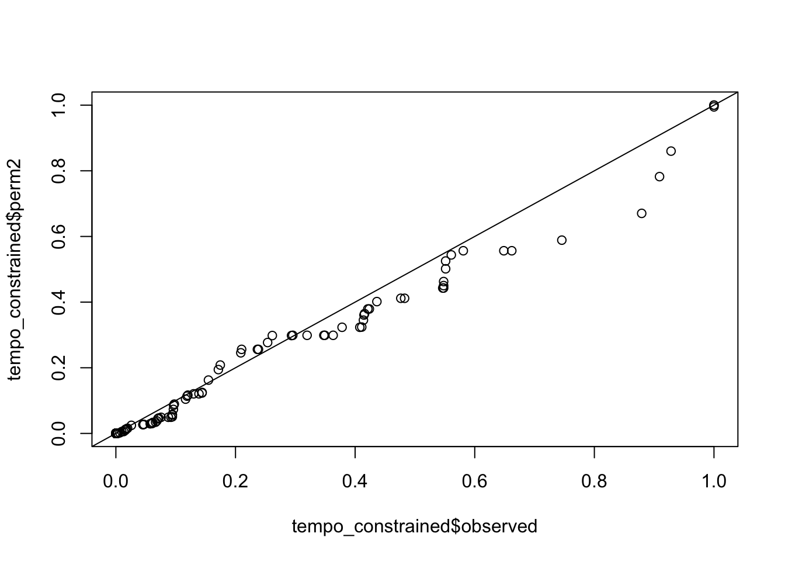

[1] ""GTEx reaction rates h2 similar to permuted h2
We want to investigate whether reaction rates estimated with imat(?) are heritable. Reaction rates (binary variables) were estimated by D using GTEx gene expression data.
Initially, D generated reaction rates with brain cortex expression data from ~250 individuals.
Heritability of reaction rates was calculated with GCTA. Actual observed h2 and two permuted h2 values are compared next. Spoiler alert: no difference between actual and permuted values. :(
Show the code
tempo = read_tsv(glue::glue("{DATA}/reaction-rates/df.GTEX.txt"))Rows: 256 Columns: 7
── Column specification ────────────────────────────────────────────────────────
Delimiter: "\t"
dbl (7): Phenotype, H2, Perm1, Perm2, H2 constrained, Perm constrained 1, Pe...
ℹ Use `spec()` to retrieve the full column specification for this data.
ℹ Specify the column types or set `show_col_types = FALSE` to quiet this message.Show the code
tempo_constrained = tempo %>% select(pheno=Phenotype,observed=`H2 constrained`, perm1=`Perm constrained 1`, perm2=`Perm Constrained 2`)
tempo_constrained %>% pivot_longer(-pheno, names_to = "type", values_to="h2") %>% ggplot(aes(h2)) + geom_histogram() + facet_wrap(~type)`stat_bin()` using `bins = 30`. Pick better value with `binwidth`.
qqplots comparing actual vs permuted h2
Show the code
qqplot(tempo_constrained$observed, tempo_constrained$perm1); abline(0,1)
Show the code
qqplot(tempo_constrained$observed, tempo_constrained$perm2); abline(0,1)